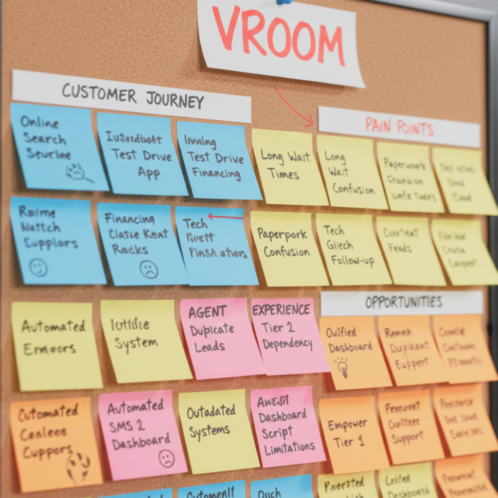
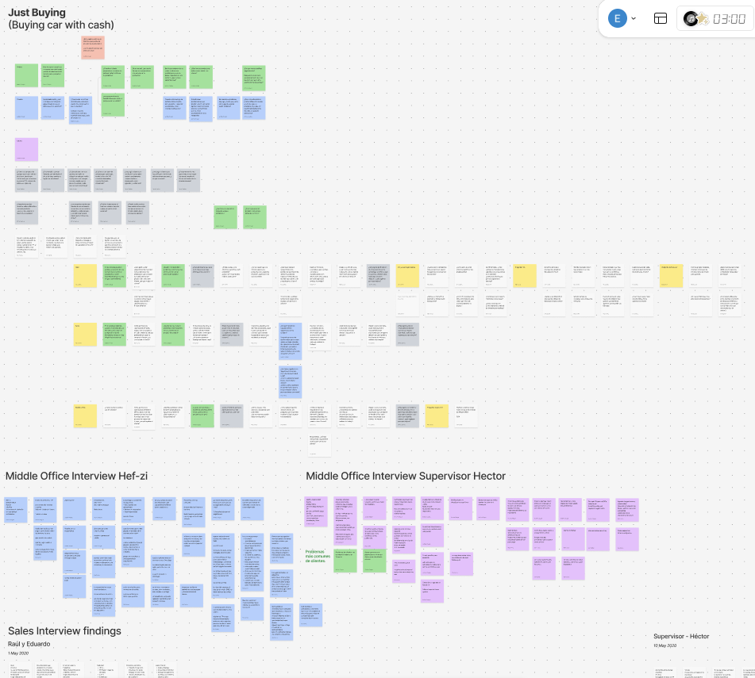
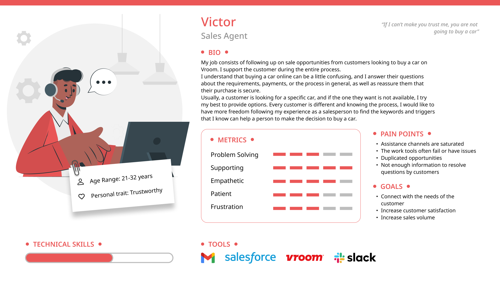
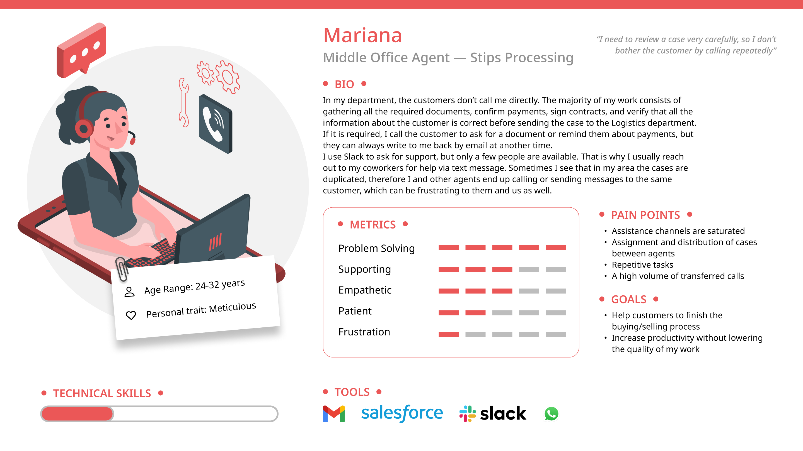
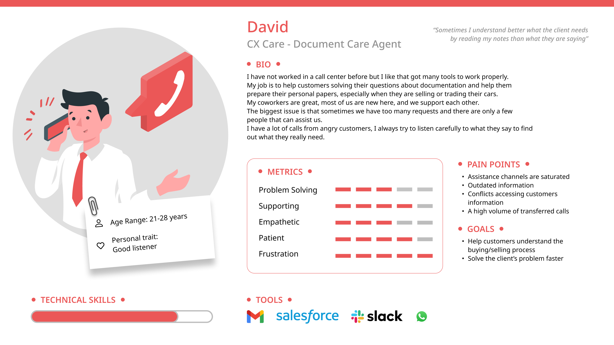
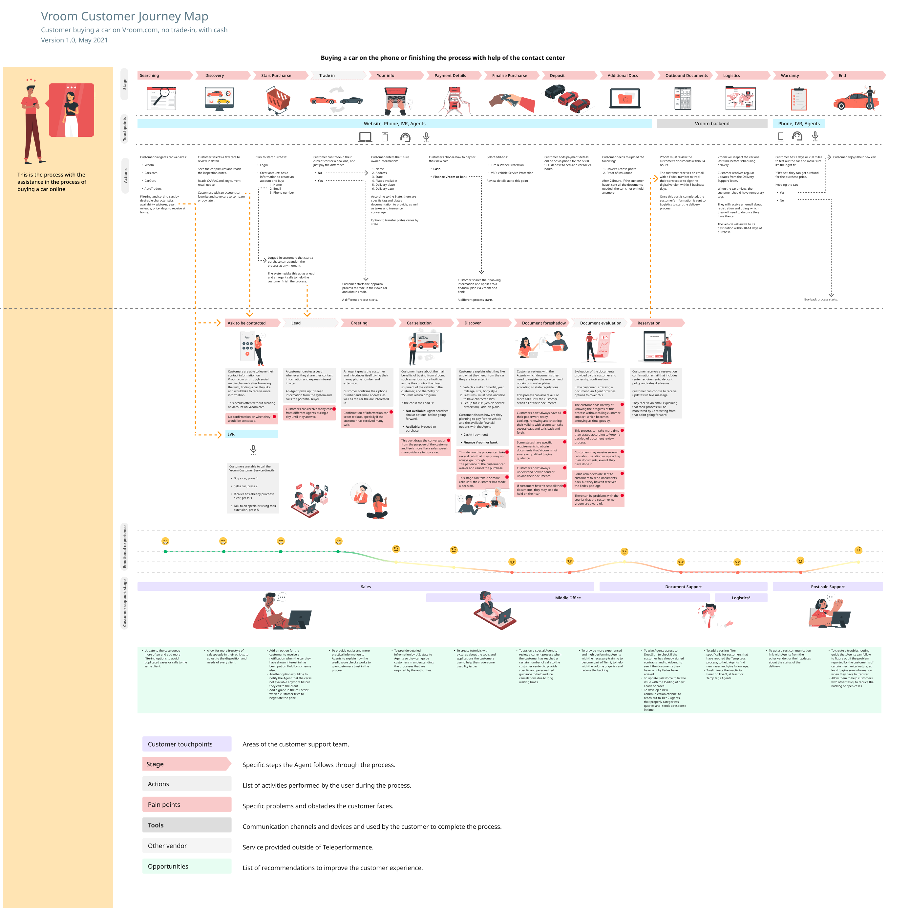
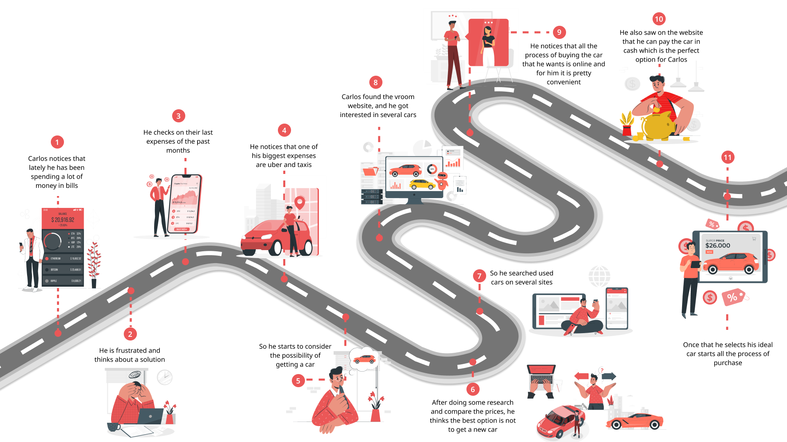
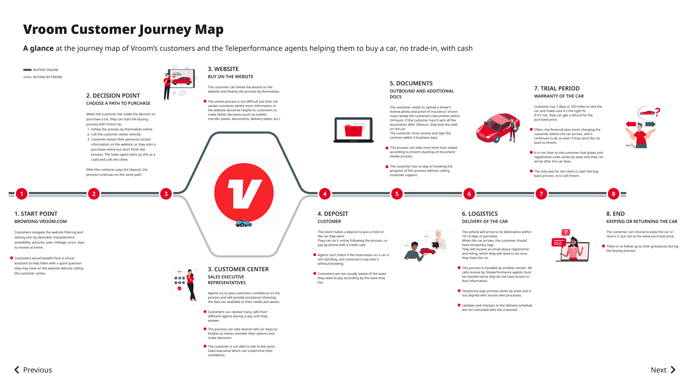

Vroom
Streamlining CX Operations
Background
Vroom is a leading e-commerce platform for buying and selling used cars. Collaborating as part of the Teleperformance CX team, I led a deep-dive analysis of call center operations to bridge the gap between agent efficiency and customer satisfaction.
Goal
To identify friction points within the executive agent workflow and uncover high-leverage opportunities for process optimization and service excellence.
My role as CX Researcher & Project Manager
Led end-to-end research, managed stakeholder expectations, and synthesized findings into actionable strategies.
Key deliverables

Understanding the operational ecosystem
To understand the operational ecosystem, we conducted semi-structured interviews with 10 participants across three core business lines: Sales, Middle Office, and Customer Care. This cross-functional approach allowed us to triangulate pain points from both execution and leadership perspectives.
Key insights
Trust as a Currency (Sales)
Agents prioritize building rapport over following rigid scripts, recognizing that emotional safety is the primary driver for high-ticket e-commerce transactions.
The Communication Gap
A significant disconnect exists between leadership and the frontline. Supervisors feel information is outdated while agents feel unsupported during high-complexity technical issues.
Knowledge Silos & Transfer Friction
Customer Care and Middle Office agents expressed a desire for more autonomy. Current protocols force excessive call transfers.
The Remote Work Paradox
Agents embraced remote work while supervisors attributed operational stress to remote environments rather than process inefficiencies.

Bridging process and empathy
We developed three distinct personas representing the core pillars of Vroom’s service ecosystem. These archetypes helped identify employee-experience friction points that directly impact the final customer experience.
1) Victor | Sales Agent
- Context: Focuses on converting leads by humanizing the digital buying process and providing security in complex transactions.
- Core Need: Greater autonomy to leverage personal sales expertise and build customer rapport.
- Key Friction: System redundancies and technical downtime interrupt sales momentum.

2) Mariana | Middle Office Agent
- Context: Manages the critical back-office transition, verifying documents and contracts before handing cases to logistics.
- Core Need: Streamlined communication and a robust internal knowledge base.
- Key Friction: Operational silos and manual repetition lead to double-touching customers.

3) David | Document Care Agent
- Context: Acts as the front line for post-sale documentation and trade-in hurdles.
- Core Need: Real-time access to updated information and technical support.
- Key Friction: Outdated data and transfers degrade the First Call Resolution metric.

Mapping the moments of truth
This map tracks the end-to-end purchasing lifecycle on Vroom.com. We focused on the Buy-Flow and direct call center interactions, identifying the moments where customer satisfaction is won or lost.
Strategic layers
- Customer actions: from online browsing to final vehicle handover.
- Front-stage interactions: direct touch-points with Sales, Middle Office, and Care agents.
- Backstage processes: internal verification and documentation workflows.
- Pain points & opportunities: critical moments where delays or information gaps occur.

Making internal workflows visible
Parallel to the customer experience, we mapped internal workflows for Sales, Middle Office, and Care agents to pinpoint operational friction, information gaps, and handover bottlenecks.

From research to a roadmap
To transform service delivery, we proposed a roadmap focused on agent empowerment and system integration:
- System intelligence: real-time lead filtering and automated hold notifications.
- Operational autonomy: access to DocuSign and Advent without Tier 2 escalation.
- Communication bridge: structured internal ticketing for faster resolution.
- Human-centric sales: flexible frameworks that support genuine rapport.
- Process transparency: a high-touch protocol for complex sales.
